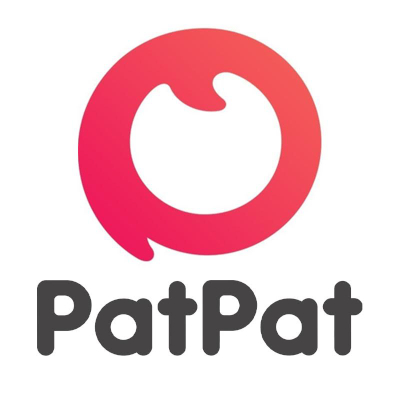

jeffrey talagon | jeffrey.talagon@gmail.com | +63 (936) 747 9139 | Koronadal City | 9506 | Philippines
Nourshing Grit. Guiding & determine for Success.
PatPat (Local Full Time)
August, 2019 – February, 2022
Customer Email Support Support
- PatPat is a daily shopping app for moms, offering deals on trending baby,
infant/toddler, kids and maternity items at up to 50-90% off, occasionally even free!
Their great relationships with manufacturers allow them to offer exceptionally low prices that
cannot be beat, with new events starting daily at 6am PST.
- My role is to handle all customer service queries of all brands and provide excellent and satisfactory aftersales support.
- I'm making sure of the loyalty of all of our customers to drive repeat sales and re-enforce recommendations.
- Using patpat application tool we process the customer demands and request for refund and reshipment, I also locate for the parcels thru the designated logistics company's website using the tracking numbers that provided.
..............................................................................................................................................................................................................................................................
Placester.com (Local Full TIme)
March, 2018 – June, 2019
Virtual Assistant / Email Support and IDX Approval
- We built Placester to give brokers, admins, and agents the power to create and
manage beautiful custom websites on their own without the need for a developer —
and access to hire creative help on-demand to do more when they need to. - My role is to help our brokers, admins and agents with their purchased website to manage and completion of requirements for IDX Approval
- Follow up the MNLS for the required documents for our clients IDX request.
- Using Salesforce CRM tools we manage our daily cases and task.
..............................................................................................................................................................................................................................................................
TomorrowSolution (Remote Part Time)
August 2018 - January 2019
Web Developer/Design
- We have been in business twenty years and provide IT Support for Windows 10
and Windows Server 2016 & 2019 every day so we are highly experienced with the
current technology Microsoft has developed. Our Internet Security background includes
firewalls from and Cisco. We are a SonicWall Partner and can install and service any
SonicWall firewall currently under support. Experience counts when you have a problem. Call us for a free qualified, experienced opinion. - We started the website from scratch to finish, using photoshop for image and photo editing. I used to manage
some plugins and purchased a theme for make more better design. - With my strong knowledge in programming I used my expertise with HTML5, CSS, JS and PHP. During my employment
I experience to configuring the API for garthering of information, using facebook developer I manipulate the JSon programming language and to conficgure the Facebook API for registration purposes and I enhance my skill using JSON.
..............................................................................................................................................................................................................................................................
Century 21st Northwest Realty (Remote Full Time)
May 2017 – October 2018
Real estate Data Coordinator
- Since 1971, the CENTURY 21® brand has been changing the real estate game by offering
independent brokers, entrepreneurs and affiliated agents the ability to achieve extraordinary
results in an increasingly competitive market. But a lot has changed since then. Many have copied the
CENTURY 21 approach, and over time we have seen a ‘sea of sameness.’ - My main role is to collect all the data of not interested customers/client, checking for an update on the
real estate and upload to designated status. - Using mypipelineplatform tool, I manage to collect the data, checking all provided address and check
on zillow, MNLS and more. Each listing status like Expired, Withdrawn, Cancelled and FSBO has its own
storage to reload that our agent able to make a call back to give new offer.
.
..............................................................................................................................................................................................................................................................
City Lending Inc. (Local Full Time)
January 2015 – March 2017
Loan Processor/Approval
- We are here to make the world a better place. We are driven by the passion of service, we aim to
elevate and provide help to everyone who's willing to improve its wellness. If you have a dream, chase it,
if it is to buy a home, buy it with us. - My role is to check each required documents, making sure that are all signed by both parties and complete at the same time.
- With the power of Encompass360 we manage to execute the task and daily works, all employess
has its own log in and easy to work for a team, I used docusign for me able to fill out the documents on behalf of my employer. - Its was a great experience with this company as they promoted me as Loan Approval, working with them as
Loan Processor for two years they give me a chance to give me another level of work experience in this field
and they also give me a power to authorize and mentor for the new hired Processor.
..............................................................................................................................................................................................................................................................
Main Street ROI (Remote Part Time)
June 2015 – November 2016
Web Developer
- Main Street ROI is a digital marketing agency based in New York. Our mission is to help all
businesses succeed with digital marketing. With our services and training, we help small businesses
succeed with marketing regardless of their budgets. - My role is to manage the website for the update content and event that needed to add on the webpage using wordpress domain.
I used to with HTML5, CSS, JS and PHP programming language. - I created and edit 12 pages in a single day and my client impressed with the result that I provided.
- Creating webform thru infusionsoft and plugin to wordpress and debuging using php for some back end development.
